Mes Images
Les Planètes
x
Mercure
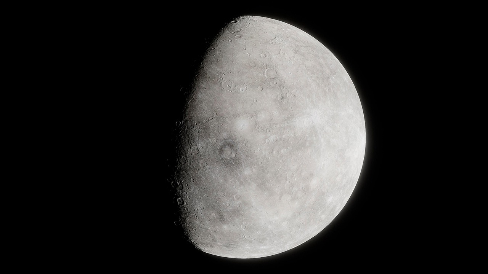
Mercure est la planète la plus proche du Soleil.
Bouillante le jour (jusqu'à +430°C),
glacée la nuit (jusqu'à -180°C)
Une journée y dure plus longtemps qu’une année !
-> Elle met 59 jours terrestres pour tourner sur elle-même, mais seulement 88 jours
pour faire
le tour du Soleil.
Vénus
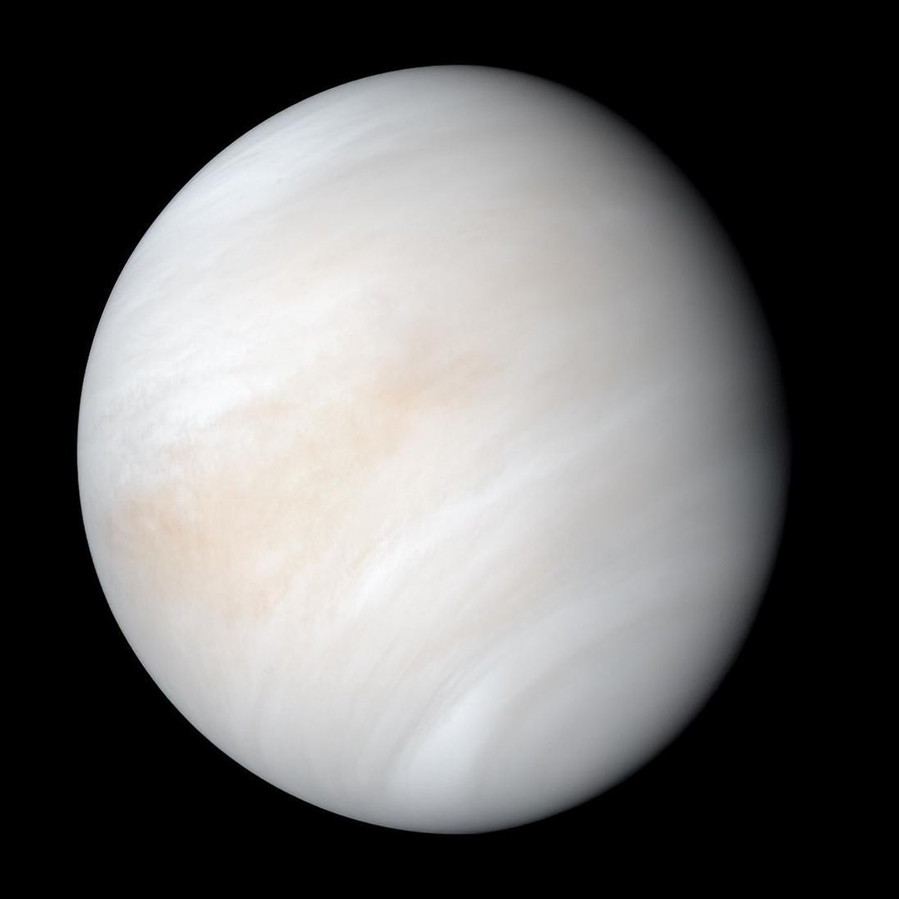
Vénus est la deuxième planète la plus proche du Soleil.
Sa température moyenne à la surface est de +460°C (planète la plus chaude).
Elle tourne à l’envers !
-> Vénus a une rotation rétrograde : le Soleil s’y lève à l’ouest
et se couche à l’est.
La Terre
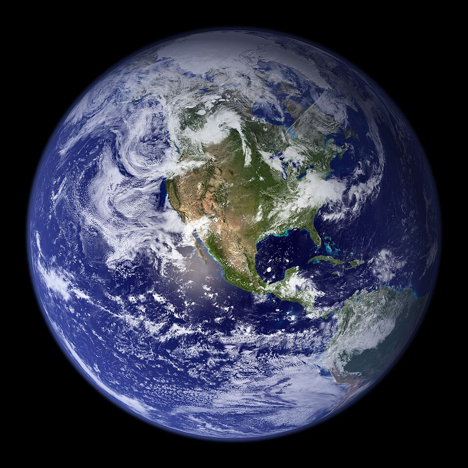
La Terre est la troisième planète la plus proche du Soleil.
Sa température moyenne à la surface est de +15°C.
Elle n’est pas parfaitement ronde !
-> La Terre est légèrement aplatie aux pôles à cause de sa rotation : c’est un géoïde.
Mars

{kind=link}
Mars est la quatrième planète la plus proche du Soleil.
Sa température moyenne à la surface est de -63°C.
Elle possède le plus grand volcan du Système solaire !
-> Olympus Mons est presque 3 fois plus haut que l’Everest.
Jupiter
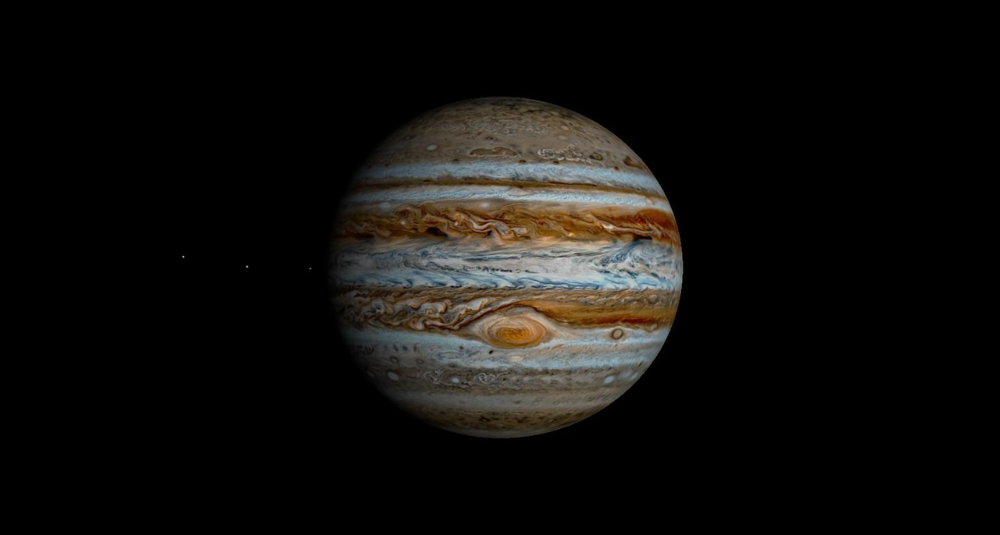
Jupiter est la cinquième planète la plus proche du Soleil.
Sa température moyenne à la surface est de -145°C.
Elle pourrait contenir toutes les autres planètes !
-> Son volume est si immense (1,431 28 × 1015 km3 soit 1 321,3 Terres) qu’on pourrait y
loger toutes les planètes du Système solaire… avec de la place en plus.
Saturne

Saturne est la sixième planète la plus proche du Soleil.
Sa température moyenne à la surface est de -178°C.
Elle flotterait sur l’eau (en théorie) !
-> Sa densité moyenne est plus faible que celle de l’eau.
Uranus
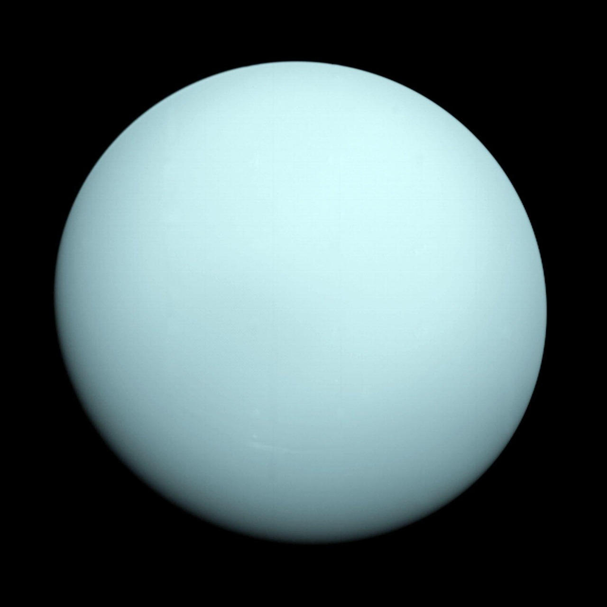
Uranus est la septième planète la plus proche du Soleil.
Sa température moyenne à la surface est de -224°C (planète la plus froide).
Elle roule autour du Soleil !
-> Son axe est incliné à ~98°, ce qui la fait tourner presque couchée sur le côté.
Neptune
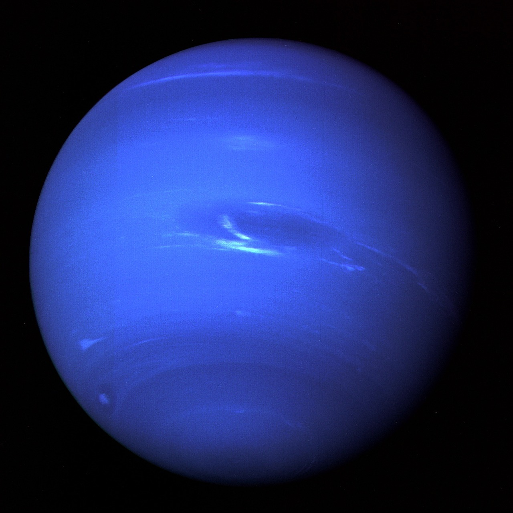
Neptune est la huitième planète la plus proche du Soleil.
Sa température moyenne à la surface est de -214°C.
Elle a les vents les plus rapides connus !
-> Les vents y dépassent 2 000 km/h, plus rapides que la vitesse du son sur Terre.
Proxima Centuri b
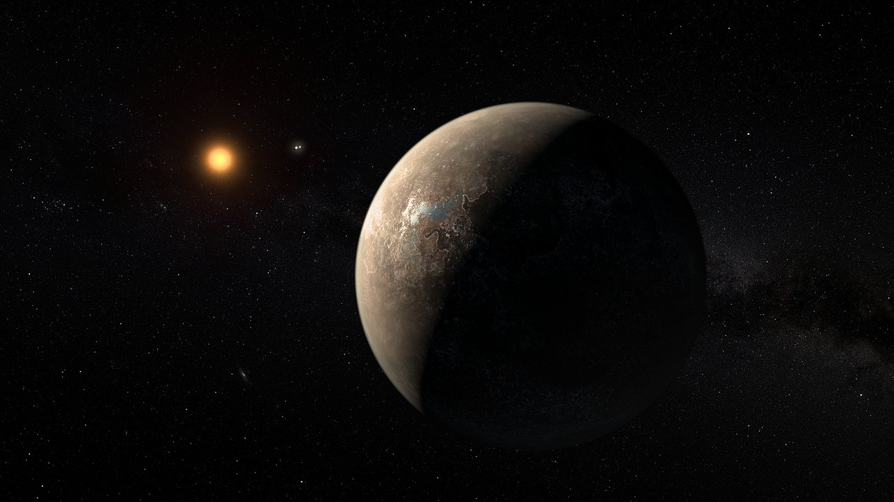
Promima Centuri b est une planète situé à environ 4,24 années-lumière de la Terre.
Elle est plus massif que la Terre et orbite dans la zone habitable de son Étoile Proxima Centuri.
La voisine la plus proche de notre Soleil !
-> Même si Proxima Centauri b est proche en termes astronomiques, un voyage avec la technologie actuelle prendrait des dizaines de milliers d’années pour l’atteindre.
Kepler-186f
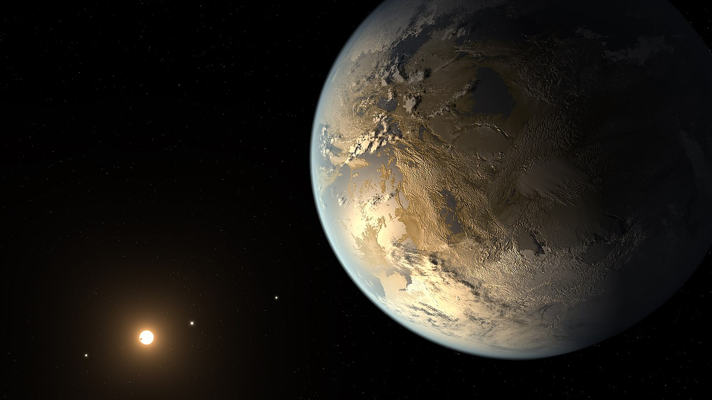
{kind=link}
Kepler 186 f est une planète situé à environ 582 années-lumière de la Terre.
Elle fait presque la même taille que la Terre (1,1x le rayon de la Terre) et orbite dans la zone habitable de son Étoile Kepler 186 f.
Elle a marqué un tournant dans le monde de la recherche spatiale !
-> Kepler-186f a été la première exoplanète de taille comparable à la Terre découverte dans la zone habitable d’une autre étoile, ce qui a ouvert de grandes perspectives pour la recherche de vie extraterrestre
TRAPPIST-1e
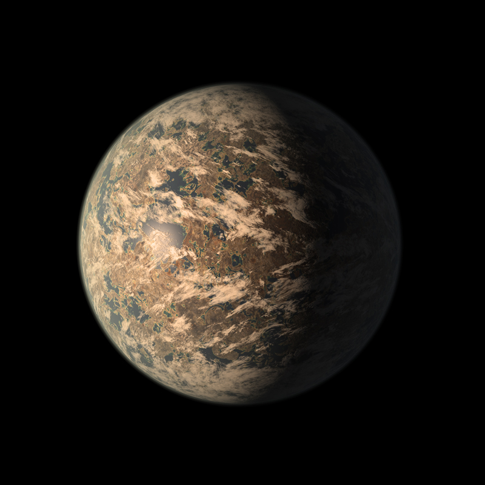
TRAPPIST-1e est une planète situé à environ 39 années-lumière de la Terre.
Elle fait presque la même taille que la Terre (0,92x le rayon de la Terre) et orbite dans la zone habitable de son Étoile TRAPPIST-1.
Une planète au cœur d’un système extraordinaire !
-> TRAPPIST-1e fait partie d’un système de sept planètes telluriques, toutes très proches les unes des autres, si bien qu’un lever de soleil sur TRAPPIST-1e pourrait être visible depuis plusieurs planètes voisines !
51 Pegasi b
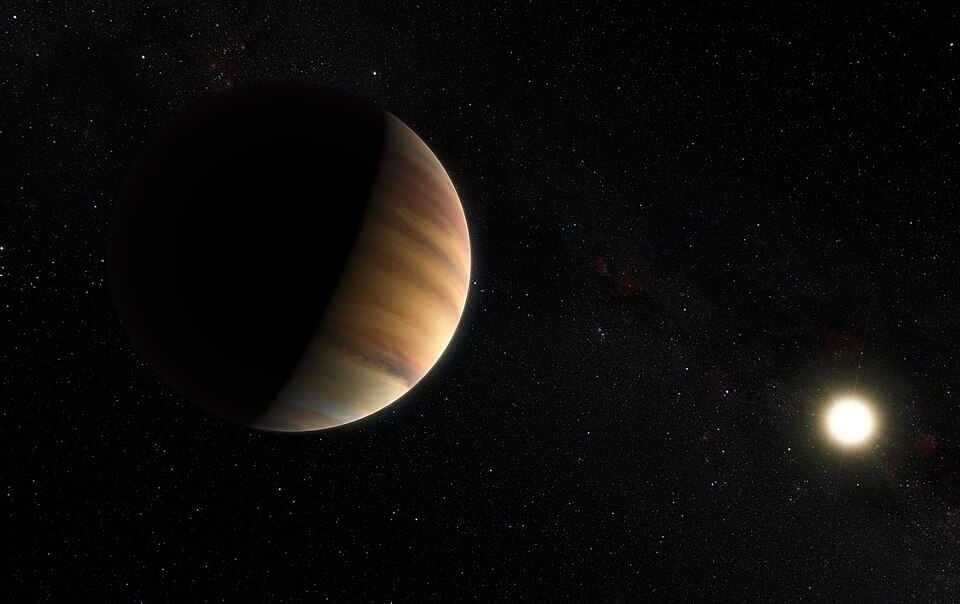
51 Pegasi b est une planète situé à environ 50,9 années-lumière de la Terre.
Elle est beaucoup plus massif que la Terre (0,92x le rayon de la Terre) et orbite dans la zone habitable de son Étoile 51 Pegasi b.
La pionnière des exoplanètes !
-> 51 Pegasi b a été la première exoplanète découverte autour d’une étoile de type solaire en 1995, marquant le début de l’ère moderne de la recherche d’exoplanètes.
Les Trous Noirs
Cygnus X-1
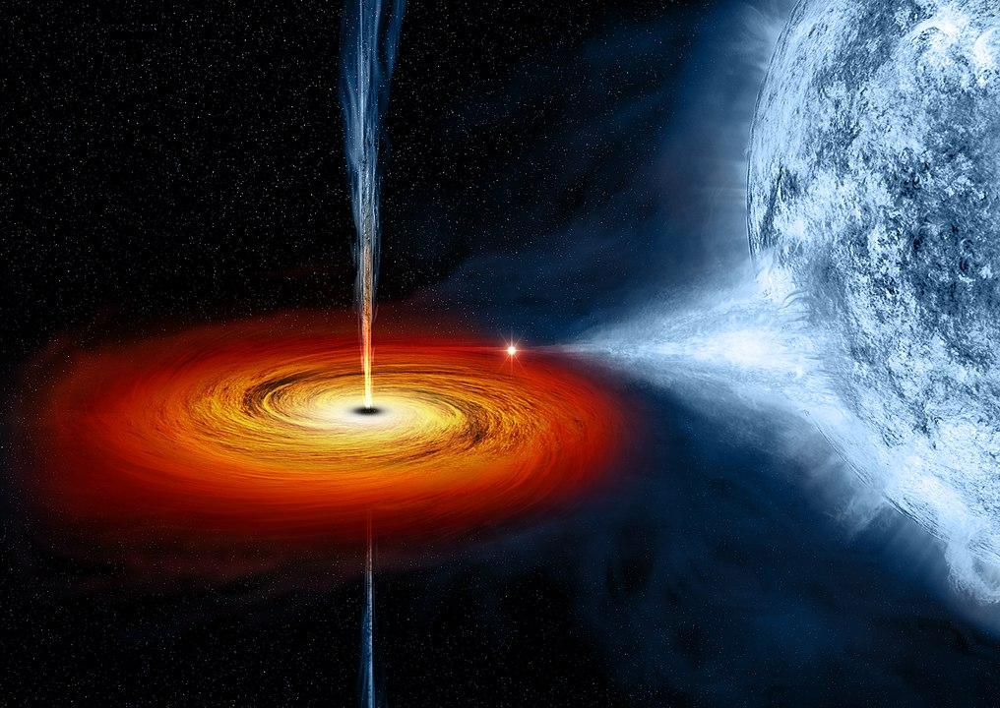
Cygnus X-1 est un trou noir stellaire situé à environ 6 070 années-lumière de la Terre.
Le rayon de son horizon des évènement est d'environ de 62km et sa masse est d'environ 21x celle du Soleil.
Un des trous noirs les plus célèbres !
-> Cygnus X-1 a été le premier trou noir candidat confirmé grâce à ses émissions de rayons X et à ses effets gravitationnels sur son étoile compagnon, devenant un objet clé pour comprendre les trous noirs stellaires.
Star GRO J1655-40
.tiff.jpg)
Star GRO J1655-40 est un trou noir stellaire situé à environ 11 000 années-lumière de la Terre.
Le rayon de son horizon des évènement est d'environ de 19km et sa masse est d'environ 6,3x celle du Soleil.
Un trou noir qui fait parler de lui !
-> GRO J1655-40 est célèbre pour avoir été le premier trou noir observé en train de lancer des jets de matière à grande vitesse, ce qui a permis aux astronomes d’étudier les phénomènes extrêmes liés aux trous noirs stellaires.
Sagittarius A*
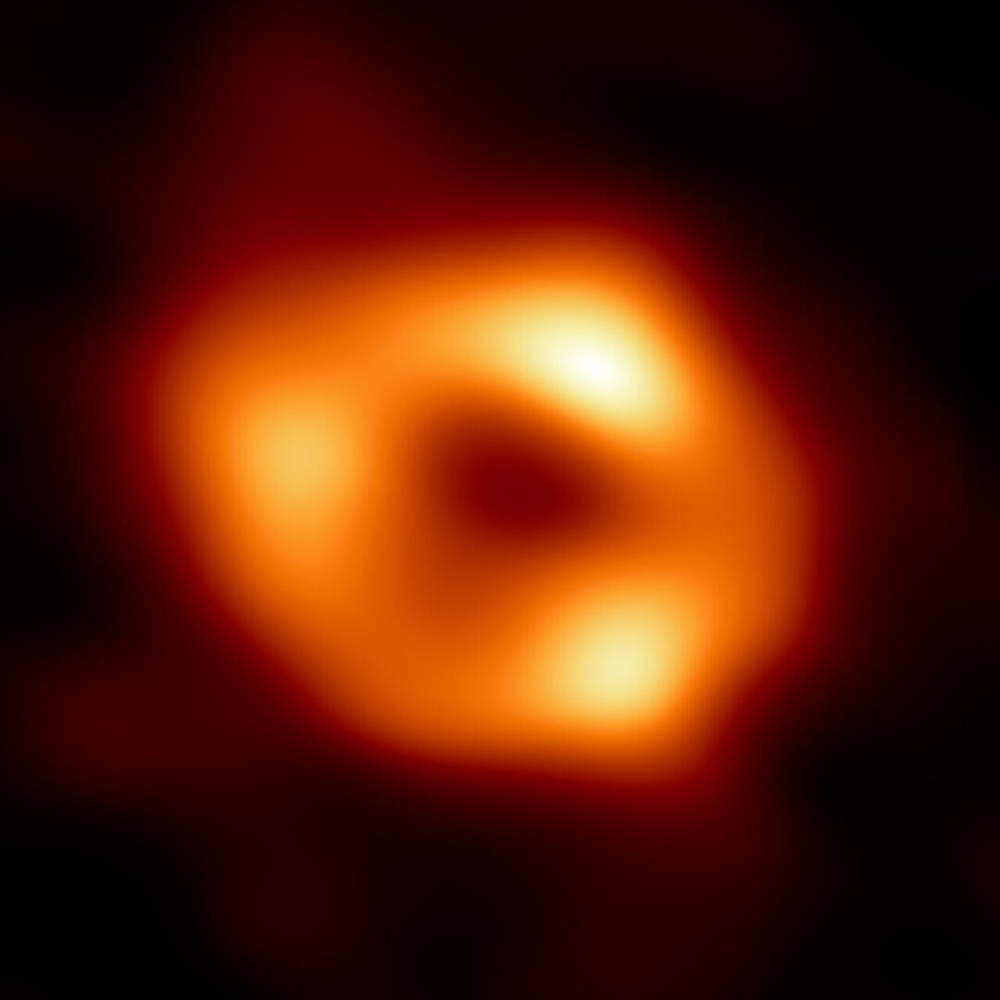
Sagittarius A* est un trou noir supermassif situé au centre de notre galaxie, la Voie Lactée, à environ 26 700 années-lumière de la Terre.
Le rayon de son horizon des évènement est d'environ de 17,7 millions de km et sa masse est d'environ 4 millions de fois celle du Soleil.
Le géant caché au cœur de la Voie Lactée !
-> Malgré sa masse énorme, Sagittarius A* est relativement « petit » comparé à sa force gravitationnelle, et les astronomes peuvent observer les mouvements des étoiles autour de lui pour mieux comprendre la nature des trous noirs supermassifs.
Ton 618
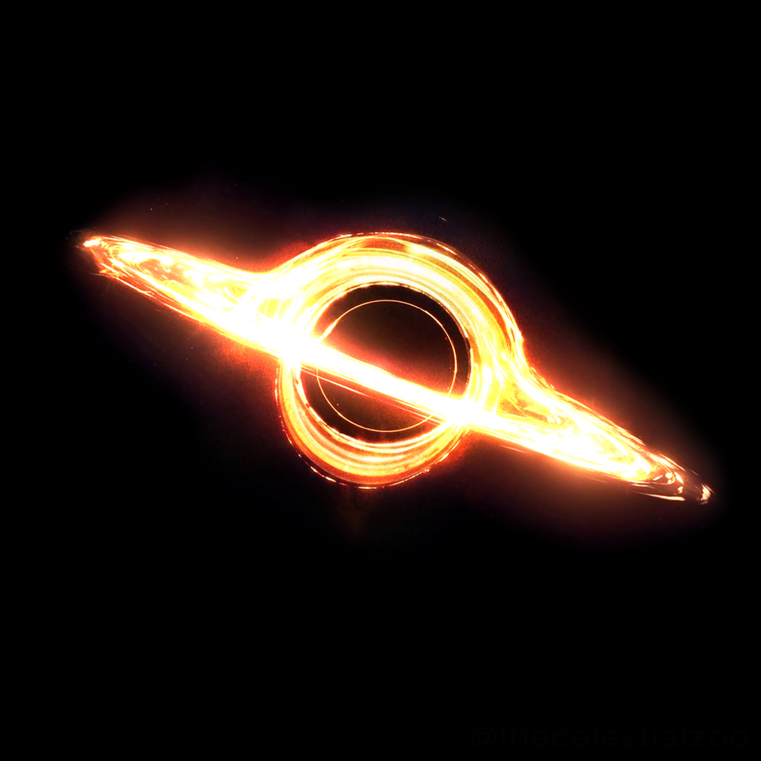
{kind=link}
Ton 618 est un trou noir supermassif situé à environ 10,4 milliards d'années-lumière de la Terre.
Le rayon de son horizon des évènement est d'environ de 190 milliards de km (soit 43x plus grand que notre système solaire) et sa masse est d'environ 66 milliards de fois celle du Soleil.
Le colosse du cosmos !
-> TON 618 est aussi un quasar ultra-lumineux, brillant des centaines de milliers de milliards de fois plus fort que le Soleil, car il attire de grandes quantités de matière qui chauffent et émettent une lumière intense en tombant vers le trou noir.